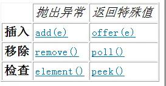

队列是一种特殊的线性表，它只允许在表的前端进行删除操作，而在表的后端进行插入操作。通俗来讲，就是一个队列中，早来的排在前面，后来的就在队尾，而这个队列大多只有一个出口和入口的单项队列。Queue的重要性不言而喻，接下来我们就来一起了解一下吧。
队列
队列是一种特殊的线性表，是一种先进先出（FIFO）的数据结构。它只允许在表的前端（front）进行删除操作，而在表的后端（rear）进行插入操作。进行插入操作的端称为队尾，进行删除操作的端称为队头。队列中没有元素时，称为空队列。正因为队列先进先出的先天特性，在一些特殊场合下称为首选项，比如：电商的秒杀。将每一个订单请求作为一个处理任务，按顺序一一排列到队列中等待处理。经典运用：线程池。
java 中的队列(Queue)
Queue接口与List、Set为同级别，都为Collection接口子接口。除了拥有 Collection 接口基本操作外，队列还提供其他的插入、提取和检查操作。每个方法都存在两种形式：一种抛出异常（操作失败时），另一种返回一个特殊值（null 或 false，具体取决于操作）。插入操作的后一种形式是用于专门为有容量限制的 Queue 实现设计的；在大多数实现中，插入操作不会失败。

方法对比
Queue 大体分2类：
1>非阻塞队列： 没有实现BlockingQueue接口的队列：
常见的有：
ConcurrentLinkedQueue：一个基于链表节点的无界线程安全队列。此队列按照 FIFO（先进先出）原则对元素进行排序。队列的头部 是队列中时间最长的元素。队列的尾部 是队列中时间最短的元素。新的元素插入到队列的尾部，队列获取操作从队列头部获得元素。当多个线程共享访问一个公共 collection 时，ConcurrentLinkedQueue 是一个恰当的选择。
LinkedList：底层维护一个链表，实现所有可选的列表操作，并且允许所有元素（包括 null）。除了实现 List 接口外，LinkedList 类还为在列表的开头及结尾 get、remove 和 insert 元素提供了统一的命名方法。可用于实现堆栈、队列或双端队列等。
PriorityQueue：一个基于优先级堆的无界优先级队列。优先级队列的元素按照其自然顺序进行排序，或者根据构造队列时提供的 Comparator 进行排序，具体取决于所使用的构造方法。
2>阻塞队列：实现BlockingQueue接口的队列
常见有：
ArrayBlockingQueue：一个由数组支持的有界阻塞队列。此队列按 FIFO（先进先出）原则对元素进行排序。队列的头部 是在队列中存在时间最长的元素。队列的尾部 是在队列中存在时间最短的元素。新元素插入到队列的尾部，队列获取操作则是从队列头部开始获得元素。因为底层缓存的一有界的数组，当缓存区创建成功后，长度便固定，试图向满队列中放元素，势必导致阻塞。另外，此类也支持公平原则，如果公平参数被设置true，等待时间最长的线程会优先得到处理。公平性通常会降低吞吐量，但也减少了可变性和避免了“不平衡性”。
LinkedBlockingQueue：底层使用链表实现的无上界的阻塞队列（可以使用指定界限的方式，设置队列的容量大小， 默认为 Integer.MAX_VALUE。），通常链表队列的的吞吐量要高于基于数组的队列，但是在大多数并发应用程序中，其可预知的性能要低。
DelayQueue：一个无界阻塞队列，和其他队列不同，获取该队列数据，只有在延迟期满时才能从中提取元素。该队列的头部是延迟期满后保存时间最长的 Delayed 元素。如果延迟都还没有期满，则队列没有头部，并且poll将返回null。当一个元素的 getDelay(TimeUnit.NANOSECONDS) 方法返回一个小于等于 0 的值时，将发生到期。即使无法使用 take 或 poll 移除未到期的元素，也不会将这些元素作为正常元素对待。
PriorityBlockingQueue：是一个带优先级的 队列，而不是先进先出队列。元素按优先级顺序被移除，该队列也没有上限（看了一下源码，PriorityBlockingQueue是对 PriorityQueue的再次包装，是基于堆数据结构的，而PriorityQueue是没有容量限制的，与ArrayList一样，所以在优先阻塞 队列上put时是不会受阻的。虽然此队列逻辑上是无界的，但是由于资源被耗尽，所以试图执行添加操作可能会导致 OutOfMemoryError），但是如果队列为空，那么取元素的操作take就会阻塞，所以它的检索操作take是受阻的。另外，往入该队列中的元 素要具有比较能力。
SynchronousQueue：一种阻塞队列，其中每个插入操作必须等待另一个线程的对应移除操作 ，反之亦然。同步队列没有任何内部容量，甚至连一个队列的容量都没有。不能在同步队列上进行 peek，因为仅在试图要移除元素时，该元素才存在；除非另一个线程试图移除某个元素，否则也不能（使用任何方法）插入元素；也不能迭代队列，因为其中没有元素可用于迭代。队列的头 是尝试添加到队列中的首个已排队插入线程的元素；如果没有这样的已排队线程，则没有可用于移除的元素并且 poll() 将会返回 null。对于其他 Collection 方法（例如 contains），SynchronousQueue 作为一个空 collection。此队列不允许 null 元素。
这些内容，仅仅是java中各种queue的类型，那到底如何使用它们？如果你对它们足够感兴趣，那就关注我们，接下来我还会为你带来更多关于queue用法的相关知识。